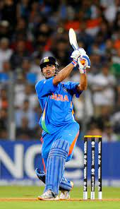
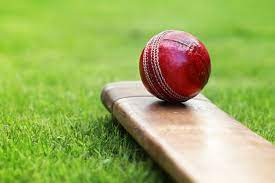
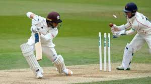
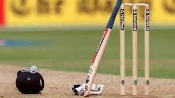

Cricket is a sport which is played between two teams of eleven players each. One team, which is batting, tries to score runs, while the other team is fielding, and tries to prevent this. Runs are scored by hitting the ball, which is thrown by a player from the fielding team to a player from the batting team, across the boundary, or by the two batting players running back-and-forth between the two wickets.
   There are two teams: The team bowling has 11 players on the field. The team batting has two players, one at each end of the pitch (also sometimes called the wicket). The rest of the batting team are off the field. Runs are got after a ball is bowled, mostly by hitting the ball and running, or by hitting the ball to or over the boundary. The captain of the bowling team chooses a bowler from his team; the other players are called 'fielders'. The bowler is trying to aim the ball at a wicket, which is made up of three sticks (called stumps) stuck into the earth, with two small sticks (called bails) balanced on them. One of the fielders, called the 'wicket keeper', stands behind the wicket to catch the ball if the bowler misses the wicket. The other fielders may chase the ball after the batsman has hit it. The bowler runs towards his wicket, and bowls towards the batsman at the other wicket. He does not throw the ball. He bowls the ball overarm with a "straight arm" (defined further in the rules and the guidance to umpires). If he bends his arm, the other teams are given one run and he has to bowl the ball again. To score a run: The two batsmen must both run from their wicket to the other wicket before they can be run out. Being run out is explained below. The batsmen can run between the wickets as many times as they want, with one run scored each time they do this. If the ball leaves the field after being hit without bouncing, six runs are scored. If the ball rolls or bounces out, whether or not the batter hit it, it counts as four runs.
A cricket field is where cricket is played. It is circular or oval-shaped grassy ground. There are no fixed dimensions for the field. Its diameter usually varies between 450 feet (137 m) to 500 feet (152 m).